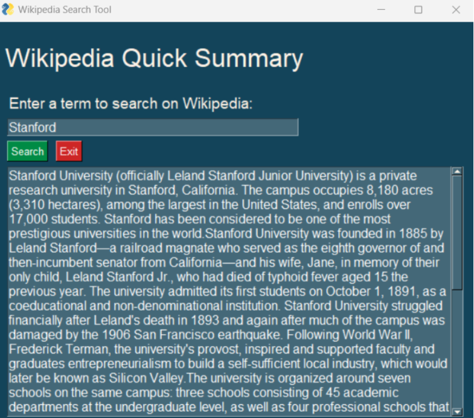

An API, or Application Programming Interface, is a set of rules and protocols for building and interacting with software applications. APIs enable different software programs to communicate with each other, allowing developers to access functionality provided by other services without needing to understand the underlying code. It's like a menu in a restaurant; the menu provides a list of dishes you can order, along with a description of each dish. When you specify what you would like to eat, the kitchen (system) prepares the meal and serves it. In this analogy, the API is the menu, and the service provided by the kitchen is the underlying code that processes the API calls.
APIs are incredibly useful because they allow developers to use functionalities that have already been implemented by others rather than having to create them from scratch. Here's why this is beneficial:
The Wikipedia API allows developers to access Wikipedia's vast repository of knowledge programmatically. The provided Python script uses the wikipediaapi library to interact with the Wikipedia API, fetching information from Wikipedia articles in a structured format.
wiki_wiki.page
In the script, the wiki_wiki variable is an instance of the Wikipedia API wrapper. The .page method is used to retrieve a Wikipedia page corresponding to a given search term. It returns an object that includes various properties of the page, such as its content, summary, and metadata. If the page doesn't exist, it allows the program to handle this case gracefully.
The script uses PySimpleGUI to create an interactive graphical user interface (GUI) that makes it easy for users to enter search terms and view Wikipedia summaries. Here's an overview of the key components:
When a user enters a term and clicks the 'Search' button, the script uses the Wikipedia API to fetch a summary of the related article. This summary is then displayed in the GUI for the user to read. The 'Exit' button allows the user to close the application at any time.
This combination of a simple-to-use GUI and the powerful Wikipedia API provides a user-friendly way to quickly access information from one of the world's largest knowledge databases.